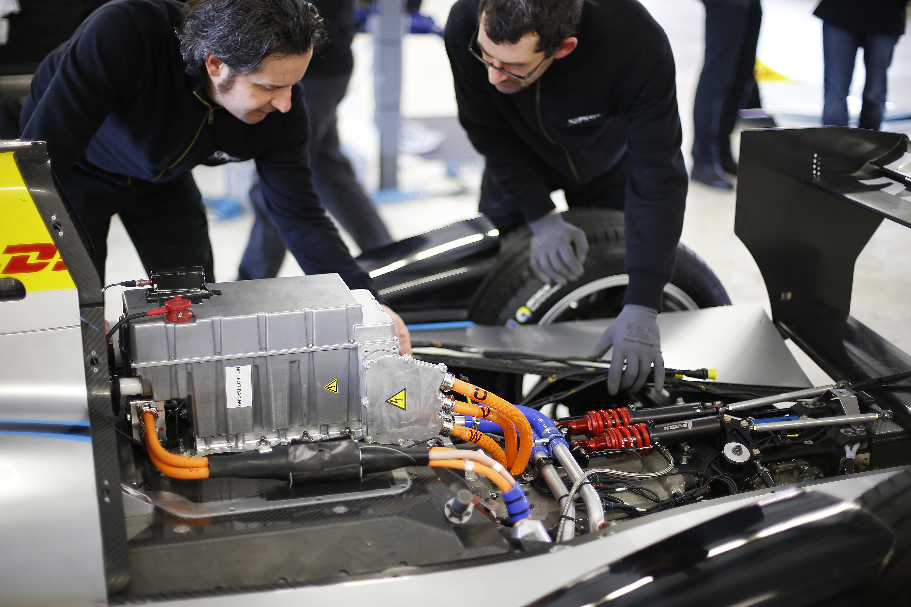
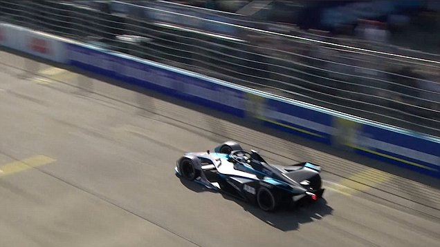
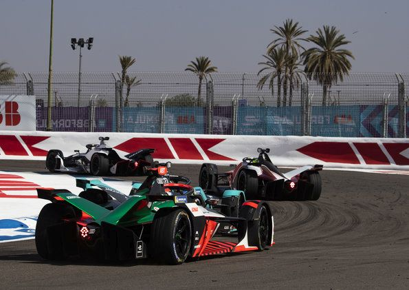
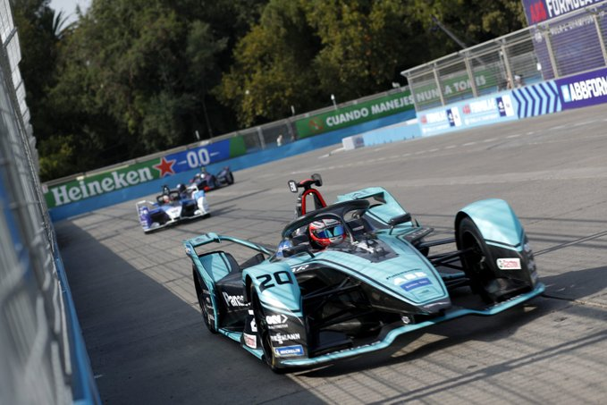
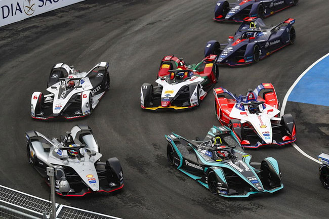
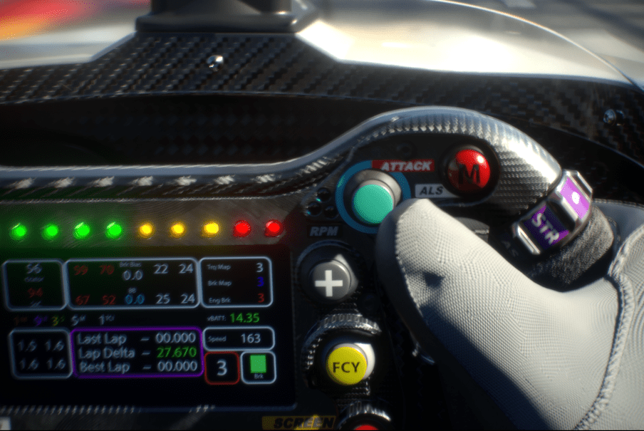
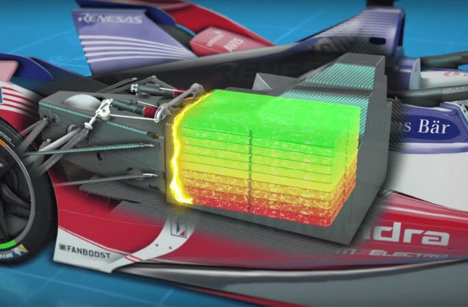

▷Dia de corrida
As corridas de Formula-e duram entre um e dois dias, sepadrados entre sessões para treino, classificação, posição e a corrida e-Prix. Todos os eventos são realizados em ruas de cidades, devido a limitações, mas também para deixa-las mais impressionantes por terem várias curvas e sessões apertadas com espaço para dois carros, dessa forma cada posição é bastante disputada pelos corredores, tendo pequenas colisões entre os carros.
▶Shakedown

Antes de começar o evento, as equipes e corredores devem primeiro testar se todos os sistemas dos carros estão funcionando, e durante esses testes, os carros estarão limitados a utilizar apenas uma pequena quantidade de potência (110 kW) para garantir a segurança de todos. Normalmente acontece um dia antes da corrida.
▷Prática

Na prática, os pilotos podem usar toda a potência do carro (250 kW) para aprender o circuito e as horas certas de frear, eles tem um tempo de 45 minutos iniciais e mais 30 minutos após descanso. As práticas não contam para a pontuação dos pilotos, elas apenas servem para que cada piloto possa aprender o circuito "individualmente" (cada corredor separado a uma certa distância do outro).
▶Qualificação

Durante a qualificação que dura uma hora, quatro grupos de seis pilotos, definidos pelas corridas anteriores, que definirá quais posições cada piloto receberá na corrida principal. As posições são definidas pelo tempo de cada corredor, com seus carros configurados para potência máxima (250 kW), e pontos são obtidos de acordo com os tempos, com os seis mais rápidos participando da Super Pole shoot-out após o término da sessão.
▷Super Pole shoot-out

Os seis corredores mais rápidos tem uma segunda chance de conseguir a Pole Position através de uma corrida de seis minutos para cada piloto, os mesmos devem sair individualmente para tentar ser o mais rápido, sendo que o primeiro além de ganhar a primeira posição na corrida, também receberá três pontos na temporada.
▶e-Prix

A e-Prix é a corrida principal do dia, em que os carros estão limitados a uma potência de 200 kW pela corrida, mas que pode ser aumentada temporariamente quando os pilotos atingirem certas condições (Tópico abaixo). A corrida dura 45 minutos mais o tempo de uma volta a mais, sendo que a última volta só começa após o primeiro colocado passar pela linha de chegada após os 45 minutos. Após a corrida ocorre o evento do pódio, entrevistas, encontro com fans e as corridas virtuais de pilotos contra fans.
▷Attack Mode e Fan Boost

Para que um piloto consiga usar mais potência do seu carro alguns minutos após o começo da corrida, o mesmo deve receber um Fan Boost, no qual antes e durante o começo da corrida, os fans podem votar em cinco corredores que receberão o Fan Boost, adicionando 15 kW de potência (totalizando 215 kW) por cinco segundos. A segunda forma é o Attack Mode, no qual o corredor deve passar por uma área vulnerável da pista (que tem o risco de permitir uma ultrapassagem), revelada uma hora antes da corrida principal, para receber uma "carga", na qual após ativação, adiciona 35 kW de potência (totalizando 235 kW) por alguns minutos, novamente determinado antes da corrida. Cada um dos modos pode ser ativado na hora que o piloto desejar, ao precionar seus devidos botões, além de poder utilizar ambos ao mesmo tempo para ter a potência máxima (250 kW). Para quem estiver assistindo, o uso dos modos são indicados por leds localizados no anel de proteção, com a cor azul para o Attack Mode e magenta para o Fan Boost, e uma cor aparecendo após a outra em caso de uso simultâneo.
▶Uso da bateria

As equipes só podem recarregar os carros durante as práticas e entre os eventos, sendo proibido o carregamento durante a qualificação e o e-Prix. Dessa forma, os pilotos e as equipes devem ter em mente o consumo de energia, mas os pilotos ainda podem regenerar energia utilizando o motor para frear e com isso recarregar um pouco a bateria. Em muitas corridas, pilotos acabam perdendo por deixarem a bateria se esgotar antes da volta final e devem abandonar a corrida.